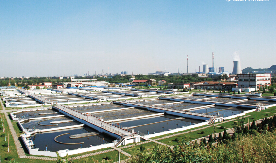

农村水污染形势严峻 治理要落到实处
2015-12-20
莱特莱德

近些年来，我国农村环境面临巨大的挑战：点源污染和面源污染共存，生活污染和工业污染叠加，各种新旧污染相互交织，工业及城市污染向农村转移。农村环境保护政策、法规、标准体系不
健全等，危及农村饮水安全和农产品安全。农村环境问题已经成为危害农民身体健康和财产安全的重要因素，严重制约了农村经济社会的可持续发展。
农村环境治理要落到实处
农村环境形势日益严峻。只有加大投入，加快基础设施建设，延伸监管链条，才能确保农村环境治理落到实处，取得实效。加快建设农村环境基础设施。要紧紧围绕全面建成小康社会和社会主义新农村建设总体目标，整合农村环境连片整治、幸福美丽新农村建设、土地整理工程等建设资金。在方案制定时，同步规划建设垃圾、污水处理设施，切实提高农村地区垃圾、污水收集及其处理率。切实加强畜禽养殖污染治理。新、改、扩建畜禽养殖场、养殖小区时，科学划定宜养区、限养区、禁养区，积极引导养殖业主确定合理的养殖种类和规模，从源头上控制污染物排放。切实落实废弃物综合利用和无害化处理方案、措施。多渠道增加农村环保事业投入。市、县区财政要加大资源整合力度，整合农业、国土、水利、扶贫、环保等项目资金。要确定一定比例用于农村垃圾、污水处理设施建设，严格实行项目与环保设施同时建设和验收制度。同时，国家应加大公共财政向农村环境基础设施建设的投入。
延伸农村环境监管链条。要完善基层环境管理体制。2012年提出要“完善基层环境管理体制，探索在重点乡镇设立环境保护派出机构”。在部分乡镇成立环保所或片区环境监察中队，把环境监管触角延伸到乡镇一级。这有利于在第一时间发现、解决环境问题。各地应积极探索在乡镇社会事务办公室增加环境监管职能，明确工作人员，专门从事环境监管工作。
污水处理经验
通过整治农村环境卫生管理、容貌秩序管控等重点工作，努力建设与全省“首位城市”、西部经济核心增长极等发展定位相适应的优美农村环境。首先，在治理方法上坚持阶段性和过程性的有机统一。提出农村环境治理分三个阶段实施，这就像庖丁解牛，不仅一下子找到了突破口和着力点，而且能够从整体着眼。如此推进农村环境治理，方法对头、措施有力，效果当然就能够达到最好。其次，在治理价值追求上突出因地制宜的地方特色。美丽中国绝不意味着全中国一个美丽模式，同样的道理，美丽乡村也罢，应该避免“千城一面”、“千村一面”，而要根据各地不同的地理景观和生态条件，因地制宜、统筹兼顾、量身定做。只有突出地方特色，打造不一样的农村环境，治理才是真正成功的。在当今环境治理喜欢“一窝蜂”的现实情况下，这种价值追求，可以说是难得的清醒和睿智。再次，在治理的目标上兼顾自然环境和社会环境。治理农村环境的独特经验在于治理自然环境和兼顾治理社会环境，就是把人的治理也纳入到环境治理之中。从被管理者言，提升老百姓文明素质，纠正不文明习惯，让老百姓发自内心支持和参与。莱特莱德采取的一系列治理农村环境的办法，我们推出的污水处理设备采用的理念高远、措施得力、实效突出，而且对于全国其他地方的环境治理具有示范和标杆意义，其成功经验值得大力推广。
 回顶部
回顶部